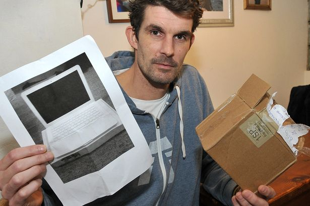

Beginner Bank Robber Downloaded Online 'how to' Crime Guide
Gregory Dike, from London, downloaded online crime guides, including one called "How to Rob a Bank". So apparently if you need to rob a bank, just GOOGLE THAT SHIZ!
Dike, 38, carried out raids in Leeds, Liverpool and Middlesex before he was arrested in Rowley Regis, in the Black Country, in March.
During the raids, he threatened staff, held an imitation firearm to a customer's head and, in his last raid, pulled a hunting knife on a customer. Dike, of 52 Alcric Avenue, Harlesden, London, was caught after he ordered a taxi as a getaway vehicle in the Rowley Regis raid. The taxi driver realised what was happening and refused to wait. Dike tried carjacking two motorists, including a pensioner who was dragged from his vehicle, but was caught by two police officers.
Dike was jailed after admitting four robberies, an attempted robbery, and firearms offences. Det Con Darren Brown said it was unclear what had led Dike to carry out such violent robberies. "He was undoubtedly a beginner − we found robbery 'self-help' downloads on his phone," he said.
Palm Harbor man accused of attacking, trying to carjack deputy
Because it's always a good idea to assult police officers when you're feeling a little down.
Deputies early Saturday arrested a Palm Harbor man they say repeatedly struck a deputy and tried to carjack his patrol car before finally being subdued.
Zane Thomas Gavin, 23, was arrested after being hit with a stun gun twice, running from the patrol car and fighting with backup deputies, the Pinellas County Sheriff's Office said.
Gavin was charged with aggravated battery on a law enforcement officer, resisting arrest with violence, attempted carjacking and aggravated battery.
Man buys Apple MacBook on eBay for £300 - but only gets PICTURE of laptop in mail
It was TECHnically still a MacBook...
Paul Barrington, 38, sold his surfboard to pay for the state-of-the-art laptop, which he wanted to use to launch a new career as a wedding DJ.
Paul Barrington, fell victim to the cruel scam after winning the auction for a state-of-the-art Apple MacBook on the website. His winning eBay bid was £300, or around $450, for the top-of-the-range computer, which can cost up to £1,500, or around $2280, when bought new. But the bargain proved to good to be true when a feather-like package arrived a few days later in a small, square box.
He said: "I sold my pride and joy for a piece of paper.
"It's the first time I haven't had a surfboard since I was 10 years old but I need a laptop so I checked the listing and the seller's rating.
"He'd been a member for a few years, so there was nothing to be suspicious about.
"I was excited about winning the auction and just thought, 'I've got a laptop so I can start the business'.
"The package was as light as a feather. Why bother sending a picture in a box? It doesn't make any sense. I almost had to laugh."
Dogs just don't want to bath
Dogs during bath time are the perfect example of anarchy. They aren't going to take orders from anyone telling them it's time for a bath. They're not just rebels, but they're quick thinkers when they don't want to get in the water. JUST WATCH!